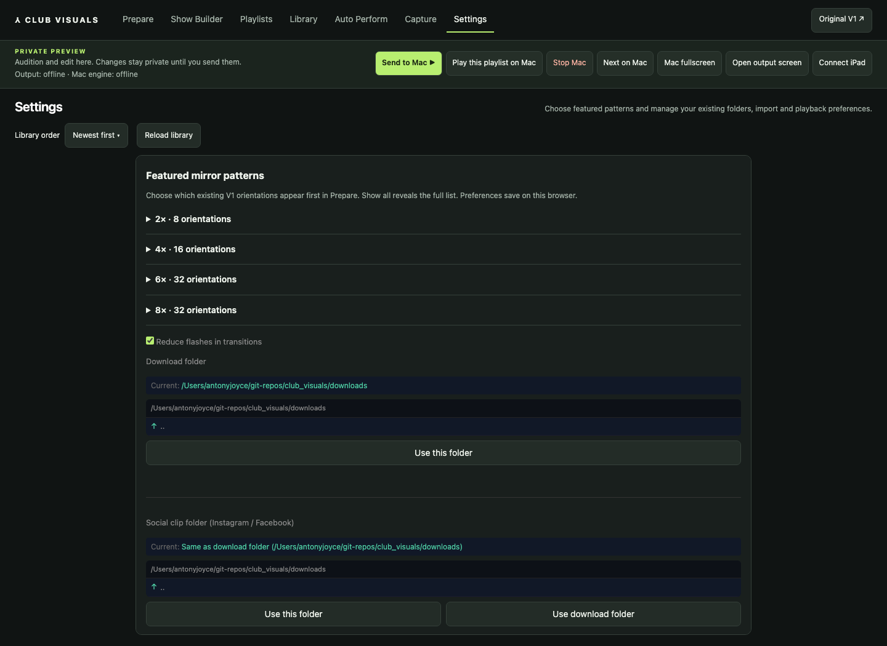
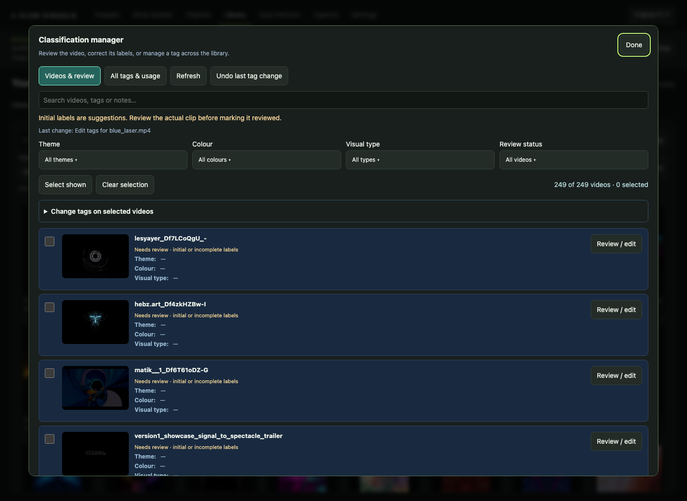
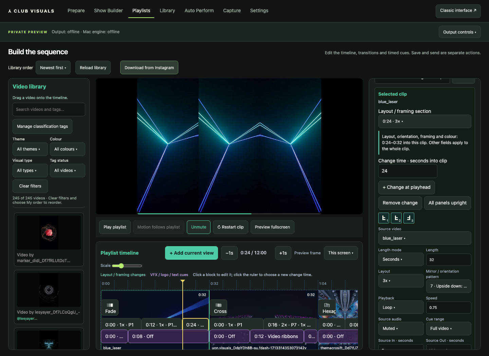
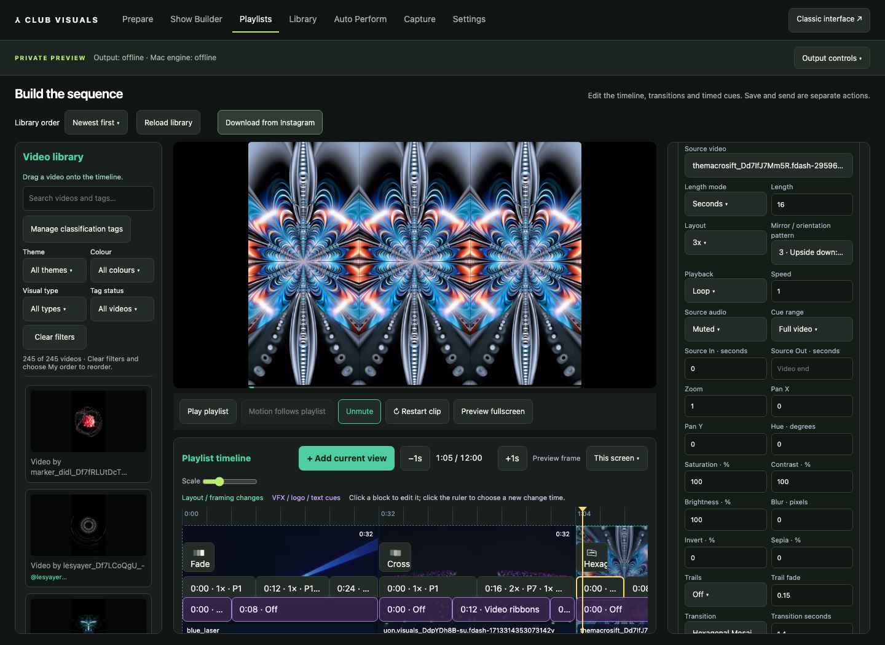
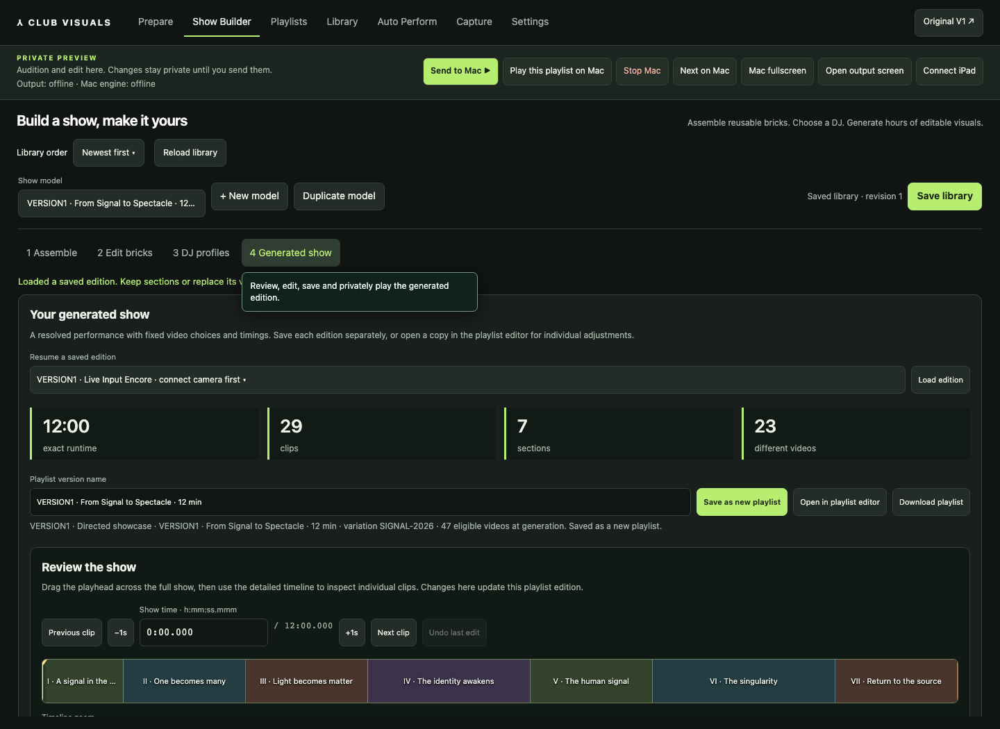
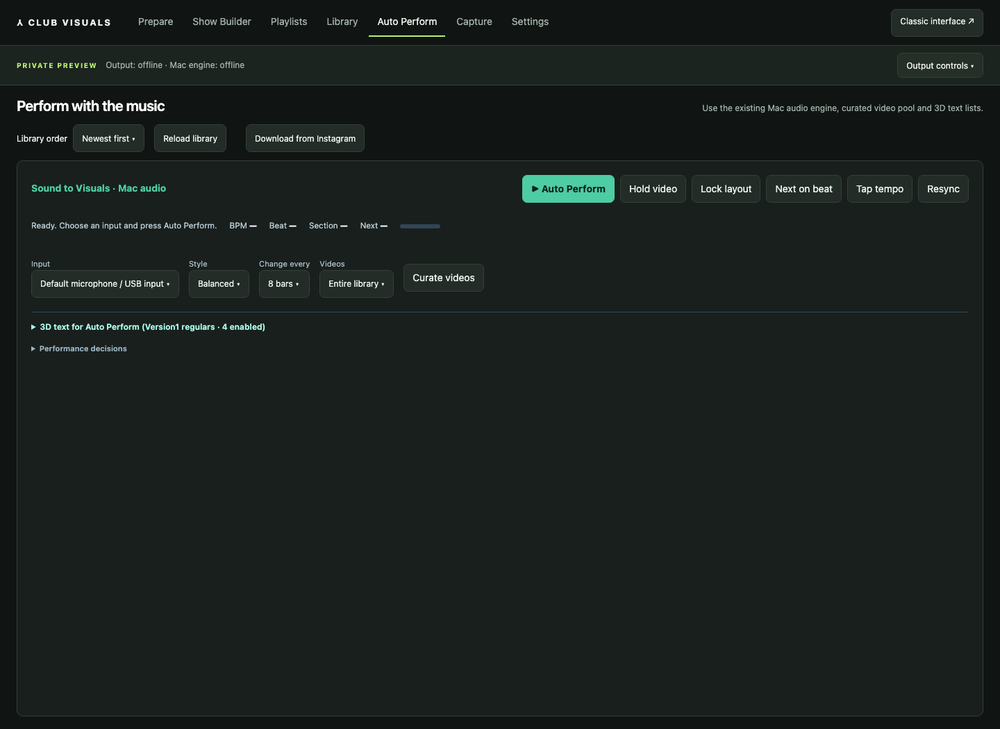
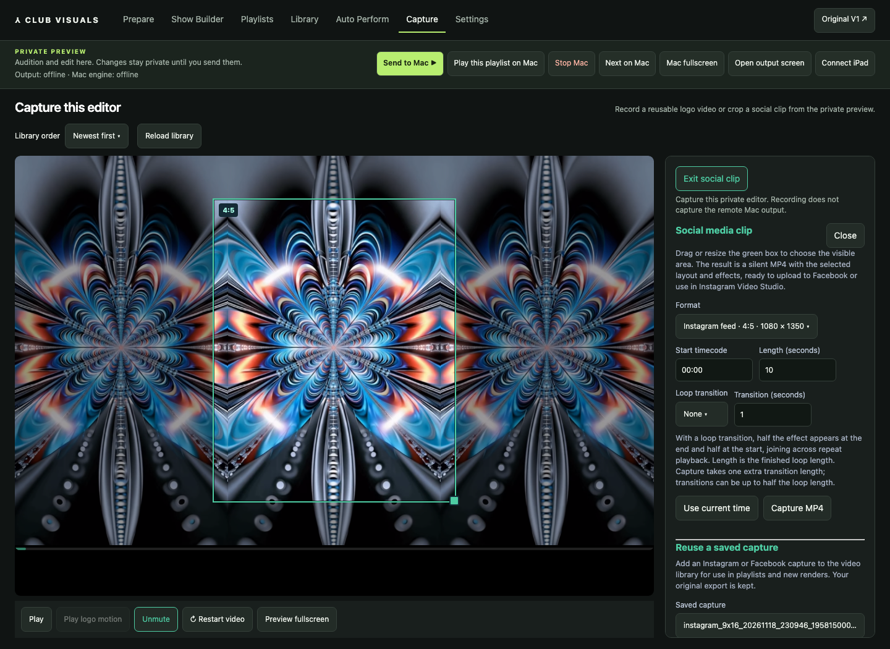
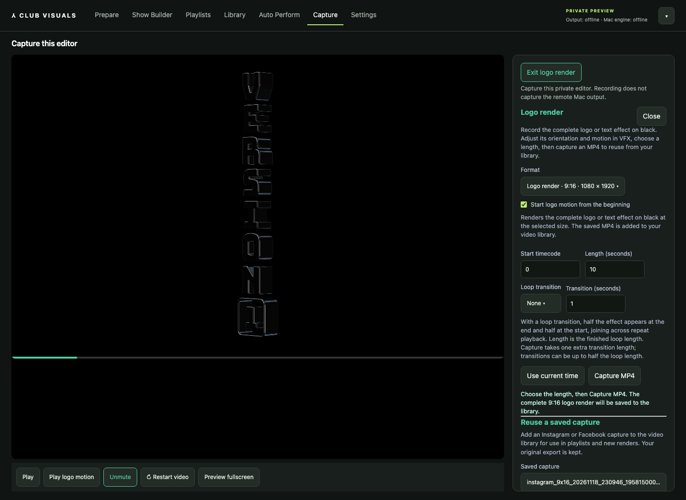

Club Visuals user guide
Build, edit, rehearse, perform and record a complete visual show.
Current redesigned interface · 19 November 2026
This handbook describes the working application at /. It follows the same journey as a performance: organise sources, prepare a look, build a sequence, rehearse its composition, send it to the Mac and capture the result. The classic interface at /classic shares the same saved media and playback engine; some control locations differ.
Your first ten minutes
- Start the redesigned server and open Prepare. Select a library video. Choose a layout and mirror pattern, then adjust Zoom and X/Y position.
- Open Playlists and select a saved playlist, or start a new one. Click a thumbnail to select its composition.
- Click a green timeline block to edit that section's layout, orientation and framing. Click a purple block to edit an effect cue.
- Place the playhead with the time ruler. Press Play playlist below the preview. This plays the full composition, including scheduled changes and logo motion. Pause to hold the composed frame.
- Click Save beside the playlist name. When you are ready for a display, use Play this playlist on Mac. Preview and saving alone do not take over the live display.

Know which action you are taking
| Action | Result |
|---|---|
| Preview / Play playlist | Runs privately in this editor. It uses the current, including unsaved, composition. |
| Save | Stores this playlist on the Mac server. It does not publish or play it live. |
| Send to Mac | Takes the currently prepared look and its state to the live Mac output. |
| Play this playlist on Mac | Sends the edited playlist to the Mac engine and starts live playlist playback. |
| Save library in Show Builder | Stores reusable models, bricks and DJ profiles; this is separate from saving a generated show. |
| Capture MP4 | Renders an export using the selected Capture format. Social and logo captures are silent. |
Choose a workspace
Prepare creates an individual look. Library finds and classifies sources. Playlists edits an exact sequence. Show Builder generates sequences from reusable recipes. Auto Perform reacts to music. Capture creates reusable or social-format video. Settings manages folders, connection and preferences.
Reading and using this guide
Follow the chapters in order or use the task index below. Screenshots were captured with Docshots against the real interface using isolated documentation data. The library and examples come from this installation. Offline output indicators and disconnected camera/audio controls are intentional; the screenshots do not represent an active live performance.
Read the complete guide on one page · Download the printable PDF. Hover or keyboard-focus application controls for contextual hints. Save edits before refreshing the editor after an update.
Chapters and task index
1. Install and start
Run the redesigned editor and understand what lives on the Mac.
2. Build and organise the library
Import your own edits, download sources and find the right clip quickly.
3. Prepare layouts, framing and cue ranges
Make one source work as a single image, mirrored grid or precisely bounded loop.
4. Edit and rehearse a playlist
See every scripted change, edit the right section and play the actual composition.
5. Video effects, chrome and text
Build a layered look and understand which controls affect which layer.
6. Animate and render the logo
Choreograph paths, upright portrait logos, letter waves and complete fly-throughs.
7. Generate shows with Show Builder
Reuse choreography while changing the source pool, DJ identity and performance length.
8. Camera movement and music
Use deliberate input connections to turn gestures and sound into visuals.
9. Capture, record and reuse
Export a social composition or a standalone logo film, then bring it back into the library.
10. Mac output and iPad control
Keep preparation private and take a rehearsed composition to the live display deliberately.
11. Reference, troubleshooting and backups
Resolve common editing questions and keep the files that make a show reproducible.
1. Install and start
Run the redesigned editor and understand what lives on the Mac.
Requirements
The application server uses Python 3.10 or later and the Python standard library. FFmpeg/FFprobe handle thumbnails, compatible previews and MP4 conversion. yt-dlp handles Instagram downloads. Use a current Chromium browser on the Mac; Chrome, Brave and Edge are supported by the Mac output launcher. GPU effects require WebGL2. Safari on an iPad acts as a remote editor and receives compatible preview copies.
Install missing command-line tools with Homebrew:
brew install python yt-dlp ffmpegStart the current interface
Open Terminal in the repository and start the complete application:
cd /Users/antonyjoyce/git-repos/club_visuals
./start.shOpen http://localhost:8008/. Use /#playlist for Playlists or /#builder for Show Builder. The redesigned interface and all current development are now the default. Existing /redesign bookmarks redirect here, preserving workspace fragments and query parameters. The classic editor remains at http://localhost:8008/classic and shares the same data.
Use ./stop.sh to stop the background server. For a foreground server, run python3 server.py and stop it with Control+C. The former python3 ui-redesign/launch.py command remains compatible and starts the same complete app. Do not run two servers against the same writable data.
Set your folders
Open Settings. Choose the source-video folder and, optionally, a separate social-clip folder. The default source folder is downloads/. Instagram/Facebook social exports use the social-clip destination; reusable logo renders go directly into the source library. Reload the library after copying your own MP4s into the source folder.


After an update
- Save each editor's playlist or Show Builder draft.
- Restart the server when server routes or backend behaviour changed.
- Refresh the Mac and iPad editors and the output window. Reopen FX/VFX controller windows from the refreshed editor.
- Rehearse playback and the connected display before the performance.
What GitHub contains
The default GitHub branch, main, stores the complete current application, tests, documentation and reusable showcase descriptions. New work branches from main; the older V2 Studio trial is superseded. Runtime video folders, saved user playlists, configuration, cookies and local metadata are ignored by Git. Keep a separate backup of those folders if you want to reproduce your complete installation on another Mac. The storage reference lists them individually.
2. Build and organise the library
Import your own edits, download sources and find the right clip quickly.
Add an MP4 you edited yourself
- Check the configured Source video folder in Settings.
- Copy the MP4 there. Give it a descriptive filename. Keep a separate original if you plan further editing.
- Press Reload library above the workspaces.
- Set Library order → Newest first. Your new file should appear near the top.
Newest-first uses the file's modification time, rather than a date embedded in its filename. A freshly copied file may keep its original timestamp. Search by its name if it appears lower down. The shared order is used by library browsers and source pickers; it does not rearrange a saved playlist.

Download from Instagram
- Open Settings and expand the Instagram connection panel.
- Choose your browser and profile, sign into Instagram in that browser, and use the app's refresh/connect action.
- Paste the reel or post URL into the download field and start the download.
- Wait for completion, then reload the library if it has not refreshed already.
Browser-session cookies are exported locally for yt-dlp. A browser/Keychain prompt can appear when the session is read. The application does not need you to type an Instagram password into the visual editor. If authentication expires, sign in again in the chosen browser/profile and refresh the connection. A successful previous export does not guarantee that Instagram will accept the session indefinitely.
Reuse an app capture
Social exports are kept separate from ordinary source discovery. Open Capture → Reuse a saved capture, choose the export, then click Add to library. A capture_… copy becomes a source while the original export stays in its destination. Repeating the import reuses an identical existing copy. For captures saved after the list loaded, press Refresh saved captures. Logo-render presets already add their MP4 directly to the library.
Search, filter and classify
Combine the text search with Theme, Colour, Visual type and Tag status. Clear filters if a known file disappears. Choose My order to use saved drag order; other sort modes arrange by name or classification. Clearing filters preserves the selected sort mode.


Manage classification tags opens a separate review interface. Inspect the actual video before marking it reviewed. Add or remove individual chips, edit notes, or select several videos and apply bulk tags. Selections can remain selected after filters change, so check the selected count before a bulk action. All tags & usage shows where a tag is used and offers rename/remove operations. Undo last tag change reverses the most recent supported catalogue change.
3. Prepare layouts, framing and cue ranges
Make one source work as a single image, mirrored grid or precisely bounded loop.

Choose the layout
Open Layout & mirror patterns. Choose Single, Dual (2×), 3×, 4×, 6× or 8×. Dual and triple use one row; 4× uses two columns and two rows; 6× uses three columns and two rows; 8× uses four columns and two rows. Tiles repeat the same decoded source with different crop and flip treatments; they are not independent video tracks.
Mirror patterns flip selected panels horizontally, vertically or both. The numbered F diagrams show the treatment. A vertically flipped F means that panel is upside down. Featured patterns can be chosen in Settings; Show all patterns reveals the rest. In the playlist inspector, All panels upright resets the selected section to no horizontal or vertical mirroring.
A finished MP4 can already contain multiple panels. Single shows that complete image; additional tiling repeats it. The showcase ripple and colour examples now use original footage and live effects, so their layout and effect parameters remain editable. Original rendered studies remain in the library as finished videos.
Zoom and position
Zoom runs from 0.25× to 4×. Below 1×, the image shrinks into black and its edges dissolve into a dust-like fade. Above 1×, the frame crops into the video. Position X/Y chooses the visible crop when enlarged and positions a smaller image in the black surround when reduced. Zero centres the framing.
A thin line between tiles can come from black pixels already present at a source video's edges. In the selected playlist section, try Zoom 1.02 and Pan X 0. The fine zoom step is 0.01. This trims those source borders for both preview and exported composition. Large outer black areas can instead come from aspect-ratio fitting or an intentional zoom-out; inspect the preview-frame aspect and the selected section before changing them.
Playback and saved looks
Use once-only playback, Loop or Bounce. Bounce alternates forward and reverse playback through the active source range. Speed changes video time independently of the logo's animation clock in Prepare. A named Saved layout stores the source's layout, pattern, framing, playback and cue range for reuse. Add current view in Playlists captures the prepared look into a playlist entry; remember to save the playlist afterwards.
Virtual source In/Out points

- Open Prepare → Cue ranges. Scrub the source to the desired beginning and mark In, or type its time in seconds.
- Mark or enter Out. Leave Out blank to use the natural video end.
- Choose Use range or Preview loop to check it.
- Give it a useful name and save it. Multiple named ranges can belong to one video.
- Use Add range to playlist, or select the named range in a playlist inspector.
In/Out are positions in the original video, not moments in the full playlist. A two-second range can fill a 32-second playlist slot by looping or bouncing. A seconds-based slot keeps its chosen show length. A loops-based slot derives its length from the source range, playback speed and loop mode.
Full video stops using a range without deleting saved ranges. Playlist entries copy their own range snapshots, so changing a named range later does not rewrite an existing performance. Replacing a playlist entry's source resets its old source In/Out. In Prepare, Restart video returns to the active range's In point; in Playlists, Restart clip moves the show playhead to the selected clip's start.
4. Edit and rehearse a playlist
See every scripted change, edit the right section and play the actual composition.
Create, open and save
Choose Playlists. Select a saved playlist, or click New, name it and add videos from the library/add-entry controls. Drag clip bodies to reorder them. A clip can appear several times with different settings. Add current view inserts the prepared source/look near the playhead. Removing a timeline clip removes only that entry. Click Save beside the name to keep your edits.
Read the three parts of a clip
- Thumbnail/body: click to select this clip's own composition directly, paused for editing.
- Transition badge: click to inspect the incoming change from the preceding clip. The first transition can start from black.
- Green and purple rows: select a specific composition section or effect cue, rather than changing the whole clip by accident.
The time ruler sets the full-show playhead. The scale slider changes timeline magnification without changing video zoom. Use the ±1s buttons for small time steps. Horizontal scrolling reveals later clips. The library, preview/timeline and inspector have separate bounded scroll areas.
Play the composition from the playhead
Play playlist below the preview runs the complete authored composition: source video, timed layouts, colour, trails, VFX, reflections and logo motion. It continues through clip boundaries. The playlist panel's Play from playhead uses the same transport. Pause playlist freezes the composed image and keeps the show position; Play resumes there. The playhead follows playback, including during source loops.
In this workspace, Motion follows playlist indicates that the playlist transport owns object motion. Use the cue editor's private audition or Prepare for separate logo-motion rehearsals. Restart clip returns to the selected clip's beginning while retaining whether the playlist was playing or paused. With playlist Loop off, the last composition is held at the end; Play then begins the show again. Preview fullscreen expands this private composition and does not send it to the Mac output.
Edit a timed section


- Click the green block at the change you want to edit. For the opening showcase lasers, choose 0:24.
- Check Layout / framing section and its displayed time span.
- Choose Dual or 4×, or adjust pattern, zoom, pan, colour and trails. The private preview updates.
- Inspect the numbered F diagram. Use All panels upright if you want no mirroring in that section.
- Preview before and after the boundary, then save.
A section's settings apply from its change point until a later change overrides them. Some later changes specify only particular fields, so other settings continue to carry forward. The section selector lists every change even if a timeline block is too narrow to show its whole label. Hover a block for its detailed settings.
Add, move or remove a change
Click the ruler inside a clip, then + Change at playhead. Edit that new section's parameters. Change Change time · seconds into clip to move the event. Times must be unique, greater than zero and before the clip's end. Remove change continues the preceding settings through that point. The initial Start section cannot be removed or moved. These actions do not split or restart the source video.
Know the editing scope
| Selected timed section | Whole clip |
|---|---|
| Layout and mirror/orientation pattern | Source video and total slot length |
| Zoom and Pan X/Y | Once/Loop/Bounce and playback speed |
| Hue, saturation, contrast, brightness, blur, invert and sepia | Source audio mute and virtual In/Out range |
| Trails and trail fade | Incoming transition type, duration and pace |


Changing source video keeps the clip's show timing and scripts but resets its old source range to the full new video. Review those scripts against the new footage. Shrinking a clip can place later authored changes beyond its end; extend the clip again or move/remove those changes as appropriate.
Edit effects and transitions
Click a purple block to open its exact cue. An Off cue ends the active effect. You can change the cue's time, effect, intensity and feedback, and edit all available camera/mirror/object settings. Logo/text cues expose appearance, reflection sources, paths, waypoints, snake and fly-along controls. Preview cue closes the dialog and moves the composition preview to that cue. Done returns to the playlist; save afterwards.

Use a transition badge or Audition transition for transition review. The catalogue offers 61 types. Choose duration, pace and any effect-specific parameters offered in the audition. Use in slot applies that audition's settings. Reduced-flash settings soften supported flashes but do not make all intense imagery suitable for every viewer.

5. Video effects, chrome and text
Build a layered look and understand which controls affect which layer.
Open the controllers
In Prepare, expand Colour, VFX & 3D text. FX opens colour/trail controls; VFX opens the video-effect, camera, mirror and 3D object controller. A controller belongs to the editor that opened it. After an update, refresh that editor and reopen its controllers if they report disconnection or a version mismatch.
Background effect plus reflective object
- Select a background library video.
- Open VFX and choose a background scene such as Kaleidoscope tunnel.
- Turn on the independent 3D logo layer.
- Adjust the background's intensity/feedback and the logo's appearance separately.
- Turn off either layer to compare its contribution; Turn VFX off disables the whole composition.

| Scene / treatment | What to expect |
|---|---|
| Plain background video | Keeps the source visible without a background shader; a logo/text layer can still appear over it. |
| Liquid ripple | Bends the playing image around ripple impulses. Fire ripple/smear supplies a manual impulse; audio can supply live triggers. |
| Image smear | Smears and retains earlier image information; feedback changes persistence. |
| Video ribbons | Rearranges the image into moving chromatic ribbons. |
| Mirror sculpture | Reflects footage inside a text or transparent-image shape, with depth, edge, tilt, extrusion and spin. |
| Kaleidoscope tunnel | Repeats and folds the source into a tunnel. |
| Prism fracture | Breaks the source into refracted fragments. |
| 3D logo only | Makes the reflective object the main scene, optionally against black. |
| Camera motion extraction | Uses a connected movement mask to reveal, glow over or distort the background. |
Black background and separate reflections
To hide the playing image while keeping it visible in chrome, turn off the video-effect layer and choose Backdrop → Black · reflections only. The source continues to light the logo. If a background-effect layer remains enabled, it remains visible behind the object; black backdrop is not an override that hides an independently enabled background layer.
For a different image behind and inside the logo, keep the main background video, then choose a second Independent reflection video. Its playback is silent and looping; its speed and clock are separate from the main video. Same as playing video removes the independent source. Reload the source choices after adding media. A missing saved reflection is retained as missing, so restoring its file can repair the look without silently substituting another video.
Materials and text
The object layer can be the Version1 logo or editable 3D text; selecting one replaces the other in that layer. Available finishes are polished chrome, liquid mirror, brushed silver, gold, rose gold, black chrome, pearl, iridescent and original colours. Text offers modern sans, Bungee and serif styles.
Low Roughness gives sharp polished reflections; increasing it softens the highlight. Bevel rounds edges. Reflection, Environment wrap and Brightness control reflected-image contribution and exposure. Depth changes extrusion; static X/Y/Z rotation sets the pose. Rendering quality trades detail against GPU workload.
Mirror sculpture has its own controls. Choose text or a transparent PNG/WebP silhouette, then adjust size, position, reflection depth, edge glow, 3D angle, extrusion and motion. This is a different treatment from the rounded 3D logo/text renderer.
Save the complete look
Use Playlists → Add current view to copy the prepared layers into a playlist. A scripted cue can store the background scene plus a logo overlay. A Show Builder effect window can do the same. Preview through the full timeline to check source ranges, tiled layouts and cue timing; the small object audition is for the individual effect, not an entire show.
6. Animate and render the logo
Choreograph paths, upright portrait logos, letter waves and complete fly-throughs.
Start with a pose
Choose the logo or text, its finish and reflection video, then set position, size, depth and static rotations. Horizontal, Vertical · top → bottom and Vertical · bottom → top rearrange the logo. Vertical presentations keep the letters and chip upright. These orientations are independent of X/Y/Z rotations and the viewing angle of a fly-along.
In Prepare, Play logo motion runs paths, automatic rotation, snake and flight without starting or stopping the background video. Motion starts paused. Restart cycle returns to its beginning. In Playlists, the playlist transport owns these clocks so the object stays in sync with its cue. The saved-effect audition offers its own temporary video and motion controls.
Paths, zoom and rotations
- Choose a Quick look as a starting point, or enable Automate object and hidden video.
- Pick Still, Bounce, Orbit, Figure-eight or Custom path.
- Set cycle length, horizontal/vertical travel and zoom minimum/maximum.
- Add X/Y/Z turns per cycle. A full 360-degree turn can join smoothly across repeats.
- Choose smooth/eased or even waypoint travel and whether to repeat the cycle.
- Enable Keep inside to fit the whole object within the current frame.
Custom paths allow dragging numbered points and entering each waypoint's time, position, scale and rotations. Use matching first and last poses for a closed repeating route. The path diagram represents the object's centre; Keep inside can also adjust its size/position to retain the complete shape.
Move the hidden reflection source
Hidden video movement moves the film through the reflective environment without requiring the logo to move. Choose a left-to-right pass, right-to-left pass or back-and-forth sweep, then set video size and travel distance in frame widths. Against black, the moving footage is visible only through reflections. Areas beyond the moving source are black.
Pulsing letter snake
Enable letter depth wave. Wave speed sets cycles per second; Depth moves individual letters forward/back; Pulse strength changes the wave's amplitude over time; Waves along logo changes its wavelength. Reverse the wave when desired. The Version1 letters and chip move separately, including in vertical presentations. Press the relevant motion/playlist Play control to run it.
Fly along the wordmark

Enable Fly-along viewpoint. The complete flight starts from a tiny distant mark, approaches close to the letters, moves along the wordmark and leaves the screen. The default 45-degree viewing angle makes the letters recede into the screen; zero degrees restores a straight-on traversal. Viewing distance sets the closest approach. Fly-along intentionally bypasses Keep inside for screen-filling close-ups.
| Flight playback | Behaviour |
|---|---|
| Back and forth | Retraces the full pass and recedes to the distant tiny point before approaching again. |
| One way · repeat | Makes forward passes; each begins again at the distant point after the off-screen departure. |
| One way · once | Makes one pass and holds off-screen. Restart cycle replays it. |
Travel speed is passes per second: 0.08 is a 12.5-second one-way pass, or a 25-second outward/return journey. Start from the chip end reverses the traversal. A normal horizontal flight exits left; the reversed horizontal traversal exits right. Vertical presentations also clear the left edge. Snake and flight can run together.
Check and capture a portrait logo
Use the effect audition's 9:16 frame or choose Record a 9:16 logo video in VFX. In Capture, choose duration and whether to start the motion from its beginning. A reusable logo-render preset records the complete object layer on black and adds the resulting MP4 to the source library. Use an ordinary social Capture format for a complete layered scene instead.
7. Generate shows with Show Builder
Reuse choreography while changing the source pool, DJ identity and performance length.
Understand the three recipe components
A model describes the overall show: length, ordered sections and their relative shares. A brick describes a repeatable chain of clip steps, layouts, transitions and effects. A DJ profile chooses source preferences, pacing, repeat constraints and branding. Generating combines them into a normal editable playlist snapshot.

Generate a first edition
- Open Assemble. Choose an existing model or create one, then set its length in minutes.
- Add and name sections. Set their relative shares; values 1, 4, 3, 1 divide a three-hour show into 20, 80, 60 and 20 minutes.
- Drag bricks from the shelf into sections. Reorder or swap them; a section repeats its chain to fill its share, trimming the final step to fit.
- In Edit bricks, define steps: named video slot, length, layout, mirror pattern, speed, framing, incoming transition and effect windows.
- In DJ profiles, choose themes/colours/types, exclusion terms, reviewed-only filtering, pacing and repeat rules. Empty tag filters allow all otherwise eligible sources.
- Use Save library to store the reusable recipe components.
- Choose a DJ and variation, then Generate show. Read warnings about unavailable sources, skipped branding or trimmed windows.
- Review the result and Save as new playlist for a separate performance edition.
A slot name shares a chosen video within one brick occurrence; a later occurrence can choose another. Slots store the choice role, not a hard-coded file, unless you pin them. Timed layout changes alter the running clip without restarting its source. A new clip step starts its source again.
Review the generated composition


Generated show → Review the show has a full-show playhead, detailed clip timeline and private composition preview. Drag the playhead or enter seconds, m:ss.mmm or h:mm:ss.mmm. Previous/Next clip and ±1 second help with precise review. Play from playhead continues through the show. The timeline's arrow keys step one second; Page Up/Down step a minute; Home/End jump to the limits.
The review inspector's sliders adjust framing, pattern, speed, duration and transition length. If a timed layout change is active, layout edits affect that change. New layout change here inserts another section. These are draft preview changes until Apply changes; Reset changes restores the edition's last applied state. Moving to another clip keeps pending drafts. Apply/Reset handles all pending clips. Apply updates the working edition; Save as new playlist keeps that result.
Undo last edit restores the edition before its last applied review edit. Pending drafts must be applied or reset before loading, generating or saving another edition. Open in playlist editor transfers the show and playhead to the full playlist editor. Save or download important drafts before refreshing.
Make another edition
Replace videos · keep choreography changes media choices while retaining lengths, transitions, layout events and brick effects. The new profile's pacing is ignored in this mode. Explicit independent reflection sources remain pinned. Use Keep this section exactly to preserve a section's existing media, effects and branding; its duration and position must stay fixed.
Pin video slots fixes selected slots to eligible sources and overrides the repeat window for those slots. Exclude videos used in avoids media from a prior saved playlist. The same recipe snapshot, seed/profile and bindings reproduce the same choices independently of how the library is sorted.
Keep reusable recipes separate from performances
Editing a brick affects future generations, not a previously generated playlist. Save chain as brick copies an arranged chain into a new reusable component. Capture playlist clips as brick turns editor entries into a reusable chain with named slots. Download/import library transfers reusable components as JSON; importing loads a draft until Save library. A stale save reports a conflict rather than overwriting another device's recipe changes.
Current limits include 24 hours per show, 10,000 generated clips and one background-effect window at a time. A window can include an independent logo overlay. Arbitrary independent video tracks, smooth tile morphing and the proposed text-based sequence language are separate from the working builder.
8. Camera movement and music
Use deliberate input connections to turn gestures and sound into visuals.
Connect a camera on the capturing Mac
- Open the Mac editor on
http://localhost:8008/and choose a background video. - Open Prepare → Colour, VFX & 3D text → Camera motion.
- Choose a camera and click Connect camera. Grant the browser's camera permission.
- Choose a Motion look and move in front of the camera. The monitor shows extracted movement, not the ordinary camera picture.
- Add a 3D logo layer if desired, then rehearse before sending the composition to Mac.

Video-filled movement on black reveals library footage only in moving areas. Motion glow over video paints movement on the background. Motion-driven distortion bends the source near movement. Use a stationary camera for local gestures; moving the camera moves the whole scene. This compares frames and changing edges rather than tracking complete people. A still person can fade from view.
| Control | How to tune it |
|---|---|
| Noise threshold | Raise it to reject sensor noise and tiny changes; lower it to reveal subtle movement. |
| Movement sensitivity | Amplifies movement that survives thresholding. |
| Frame comparison delay | Compares with a frame 50 ms to 2 seconds earlier; longer values reveal slower movement. |
| Motion trails | Controls how long detected movement remains, from no trail up to 3 seconds. |
| Effect strength | Adjusts the visual influence of the mask. |
| Mirror camera movement | Reverses the horizontal response. |
| Suppress uniform lighting changes | Helps reject scene-wide exposure/lighting shifts. |
| Reset motion history | Clears comparison frames and trails without disconnecting. |
Turn VFX off to return to ordinary video without disconnecting the camera. Disconnect camera releases the device. Closing or refreshing its capturing editor also releases it. An ordinary HTTP iPad LAN link cannot request camera access; connect from the Mac's localhost editor or an appropriate secure origin. Refresh cameras after attaching a browser-visible USB camera/capture device.
A take sends the chosen camera-source identity to Mac output. Keep the capturing editor open and visible: it sends a small movement mask through the local app server. Camera permission and live frames are not saved in a playlist. Reconnect before using a saved camera cue. The offline showcase's recorded movement study demonstrates the processing but is not a live connected camera.
Auto Perform with music


- Choose the intended microphone or USB input. For live output, use the Mac engine's audio setup rather than the iPad's microphone.
- Start Auto Perform locally once to grant permission and activate browser audio. Check the input meter.
- Choose Balanced, Hypnotic, High Energy or Ambient style; set the change interval in bars and choose the whole library or current playlist pool.
- Open Curate videos to include/exclude sources and assign energy tags.
- Watch BPM, beat, section and next-decision status while music plays.
Hold video prevents source changes while other decisions continue. Lock layout preserves the layout. Next on beat queues a source change on a detected beat. Tap tempo and Resync help align the system when detection needs guidance. Performance decisions can be inspected in the log. Musical detection is live analysis, so rehearse it with the actual music/input; a bar interval is not a guarantee of a specific artistic cut.
Text lists and audio-reactive VFX
Open 3D text for Auto Perform to create named lists of event names, Instagram IDs and URLs. Enable the entries you want to rotate; Instagram IDs show a red @. List changes save in this browser as you make them. Preview VFX's Venue sound connection drives ripple/smear/bass responses in that preview. It analyses the selected live input; muting the video does not mute an independently connected input, and source-video audio is not automatically the VFX analysis feed.
9. Capture, record and reuse
Export a social composition or a standalone logo film, then bring it back into the library.
Choose the right recording method
| Method | Use it for |
|---|---|
| Capture → social format | A selected crop of the private composition, with source start/length and an optional loop transition. Silent MP4. |
| Capture → logo-render format | The full reflective object on black, fitted to portrait/landscape/square output. Silent MP4 added directly to the source library. |
| Playlist Record / Record editor | Recording the local editor composition as it runs. This records the private editor, not a remote Mac screen. |
| Clean output / OBS | Capturing the clean program window with an external recorder or stream setup. |


Capture a social clip
- Prepare the desired video/layout/effects in the private editor.
- Open Capture and choose the output preset.
- Drag or resize the green crop box to choose the visible portion of the composition.
- Enter the source start timecode and final length. Use the current-time helper if useful.
- Choose a loop transition or None. Select its duration when enabled.
- Press Capture MP4 and wait for rendering/conversion to finish.
- Play the saved file to verify framing and the loop, then use the download link or destination folder.
| Format | Pixels | Application preset |
|---|---|---|
| Portrait 9:16 | 1080 × 1920 | Instagram, Facebook reel/story and logo portrait |
| Feed 4:5 | 1080 × 1350 | Instagram and Facebook feed |
| Square 1:1 | 1080 × 1080 | Instagram, Facebook and logo square |
| Landscape 16:9 | 1920 × 1080 | Facebook landscape and logo landscape |
These are the app's export presets, not claims about a platform's upload requirements. Pick the shape needed for your destination and add music in a separate editor if required. Social captures use silent H.264 MP4 at 30 fps. With a loop transition, half the effect appears at the end and half at the start so it joins across repeated playback. The transition can be up to half the final loop length; recording takes one extra transition length.
Capture the complete logo in 9:16


- In the VFX object controls, choose the logo orientation and appearance.
- Use Record a 9:16 logo video, or choose a logo-render format in Capture.
- Set length. Keep Start logo motion from the beginning checked for a fresh animation cycle; uncheck it to continue the current pose.
- Capture, then review the MP4 in the library.
Keep inside fits the object unless fly-along deliberately fills/exits the frame. A one-way flight can end completely off-screen; use a length that includes its departure and any intended black tail. Logo-render formats isolate the object layer on black. Use an ordinary social preset to capture background VFX and logo together.
Reuse an export
In Reuse a saved capture, refresh, select the social export and click Add to library. The imported capture_… source can be placed in playlists or even used as a reflection source. The original export is retained. Logo renders already appear as sources. Reload the main library after adding an externally edited MP4.
Record a running playlist
Use the playlist/editor Record action for the composite local playback. Ordinary recording uses a 1920 × 1080 capture canvas and converts to MP4. Available source audio depends on whether it is unmuted and whether the browser exposes an audio track through its capture path; check the resulting file rather than assuming venue audio was included. The microphone used for VFX analysis is not automatically mixed into this recording. Stop the recording and allow conversion to complete before closing or refreshing the editor.
10. Mac output and iPad control
Keep preparation private and take a rehearsed composition to the live display deliberately.
Prepare the display
- Run the app on the Mac and connect the projector/display.
- Click Open output screen. The dedicated Chromium output window contains the resident Mac playback engine.
- Move that window to the intended display before the show.
- Use Mac fullscreen to control that dedicated window. The button reports its actual state.
- Send a prepared look or play a rehearsed playlist on Mac.
The clean output omits the editor's library, settings and timeline. The dedicated output uses its own browser profile, leaving ordinary personal browser tabs alone. Keep one playout engine active for a performance. Keep the Mac awake and the server running.
Connect the iPad
- Put Mac and iPad on the same network.
- On the Mac editor, click Connect iPad.
- Generate the current link, choose the adapter/network used by the iPad if several appear, then copy the link.
- Open it in Safari on the iPad. The
remote=1link selects controller mode explicitly. - Check controller, engine and output status separately before sending a show.

Generate a new link after changing Wi-Fi. A link's current IP address is local to that network. Guest/venue Wi-Fi can isolate clients, so a reachable internet connection alone does not prove the iPad can reach the Mac. Check incoming Python firewall permission and confirm the Mac is awake. Ordinary LAN camera capture has additional browser restrictions; connect camera input from the Mac's localhost editor.
Preview versus live
Selecting sources, editing sections, playing the preview and auditioning effects remain private. Send to Mac copies the prepared look from its current position, including framing and effect state. Later edits remain private until another take. Play this playlist on Mac sends the current edited playlist, including unsaved entries and loop preference. Use Next on Mac and Stop Mac for live control. Saving a playlist alone changes neither the displayed look nor live playback.
Preview fullscreen affects this controller's private preview. Mac fullscreen affects the dedicated output window. If a browser denies native preview fullscreen, a window-filling preview is used instead; press Escape to return. Do not confuse closing an audio setup panel with stopping the Mac engine.
Control ownership and disconnection
When the iPad takes remote control, the Mac editor is locked and identifies the controller. Return control to Mac releases that ownership; the iPad can keep editing privately but must explicitly take remote control again before sending live commands. The locked Mac can still open/focus its output window.
If the iPad stops sending its heartbeat, the Mac editor unlocks after about eight seconds. The resident engine continues its existing playlist. This protects a performance when the iPad sleeps or disconnects; it is not a backup for losing the Mac server or power. Reconnect, check ownership/status and only then send further live changes.
Audio and compatible previews
For venue audio, open the Mac output's audio setup and choose the Mac microphone/USB device. Grant permission locally before relying on iPad commands. The iPad's Mac-audio controls can start/stop Auto Perform and change its live settings once prepared. The iPad does not need microphone access for Mac-driven audio.
Safari preview copies are prepared and cached as H.264/AAC, with a maximum 1280-pixel edge and 30 fps. A first-use conversion can take time; the Mac output still uses original media. Tap Play if iPadOS blocks autoplay. A slow compatible preview does not mean the original file has been overwritten.
11. Reference, troubleshooting and backups
Resolve common editing questions and keep the files that make a show reproducible.
Common problems
| Symptom | What to check |
|---|---|
| I hear/see a source but timed changes do not run. | In Playlists, use Play playlist / Play from playhead. In Prepare, Play controls an individual source. The playlist transport runs the whole composition. |
| The first showcase clip shows letters rather than blue lasers. | SIGNAL is an intentional reflective title for the first eight seconds. Scrub beyond 00:08 to inspect the lasers directly. |
| Changing layout did not affect the later change. | Select the green block or section at that later time. An explicit later cue can override the initial settings. |
| A panel is upside down. | Inspect its numbered F diagram. Select another mirror pattern or All panels upright for that section. |
| There is a thin black line between tiles. | The source may contain black edge pixels. Try Zoom 1.02 and centred Pan X. Review before/after and save the selected section. |
| A tiny panel number floats over other controls. | Refresh the updated editor after saving edits. Panel numbers are now contained in their orientation boxes. |
| A new file is missing from the library. | Check the source folder, MP4 name, active filters and sort mode. Reload library. Import social exports using Capture → Reuse a saved capture. |
| The independent reflection is missing. | Restore the selected source file or deliberately choose another one. Reload reflection choices. Missing sources are not silently replaced. |
| VFX off appears ineffective. | Refresh the editor and reopen its own VFX controller. Turn VFX off disables the complete composition; individual layer switches disable only their layer. |
| The camera stays black or motion persists incorrectly. | Connect explicitly on localhost; check device permission, threshold and movement. Reset motion history to clear trails. Still subjects are not continuously tracked. |
| Auto Perform does not react to the intended music. | Check the correct Mac input and live meter, local audio permission, input level and detected BPM. Source audio is not automatically the analysis feed. |
| I recorded only a logo, but wanted the background too. | Choose an ordinary social Capture preset for the complete scene. Logo-render presets intentionally isolate the object on black. |
| Changes disappeared after refresh. | Direct playlist edits need Save. Show Builder preview edits need Apply and then Save as new playlist. Recipe edits need Save library. |
| iPad status says output/engine offline. | Open the dedicated Mac output, keep the server awake, verify network/ownership and refresh after an update. Controller connection alone is not an active engine. |
| Port 8008 is occupied or the homepage is outdated. | Save edits, run ./stop.sh then ./start.sh, and refresh the editor. The current interface is at /. Do not create a second writer for the same data. |
Composition parameter reference
| Parameter | Meaning / working range |
|---|---|
| Source / length | A library MP4; seconds or loop count determine the slot length. |
| Layouts | 1×, 2×, 3×, 4×, 6× and 8× repeat the same video with per-panel flips. |
| Pattern | 32 combinations; numbered orientation diagrams identify horizontal/vertical flips. |
| Zoom | 0.25-4×; playlist fine adjustment 0.01. Below 1× uses black surround/dust fade. |
| Pan X/Y | -1 to +1; zero centres the crop or smaller image. |
| Video speed | 0.25-4×. Separate from object animation speed. |
| In/Out | Seconds in the original source. Blank Out means natural end. A range needs at least 0.1 seconds. |
| Colour | Hue 0-360 degrees; saturation/contrast/brightness use percentages. Invert and sepia blend towards the treatment; blur uses pixels. |
| Trail fade | 0.01-1 in the playlist inspector. Smaller fade values retain older frames longer. |
| Effect cue time | Seconds into its clip, before that clip ends. A later Off cue ends the effect. |
| Transition | 61 types; 0.15-10 seconds, with even/build/hit/ease pacing. Some types expose additional parameters in Audition. |
| Logo X/Y | Normalised positions from 0 to 1. Object Y is measured from bottom to top; it differs from a source crop control. |
| Static rotation | X/Y/Z pose angles. Automatic rotation adds a sweep around the chosen axis. |
| Material | Nine finishes. Bevel, roughness, reflection, environment and brightness tune the surface. |
| Animation cycle | 0.5-600 seconds in the motion editor, with path travel, zoom range and X/Y/Z turns. |
| Custom waypoints | Authored time, position, scale and pose; drag their diagram or type values. |
| Hidden source | Still, left-to-right, right-to-left or back/forth; independent source size and travel. |
| Snake | Wave speed, depth, pulse, wavelength and reverse direction move letters independently. |
| Fly-along | Speed is passes/second; angle 0-75 degrees; distance is in letter heights. Bounce/repeat/once control the pass behaviour. |
| Reflection video | Same as main source or a chosen silent looping source, with 0.25-4× playback speed. |
| Camera | Threshold .01-.5, gain 1-12, delay .05-2 seconds, trails 0-3 seconds and strength 0-2. |
Where your work is stored
| Location | Contents / backup advice |
|---|---|
downloads/ or the configured source folder | Original source MP4s and available .info.json sidecars. Back up the actual media, not just playlist JSON. |
playlists/ | Saved playlist JSON: filenames, durations, source-range snapshots, composition sections, VFX cues and transitions. |
video_cues/ | Named per-video source ranges. Files use a hash of the source filename; use the app to edit them. |
video_presets/ | Saved per-video layout/playback/framing presets. |
show_models.json | Reusable Show Builder models, bricks and DJ profiles, separately revisioned from performance editions. |
library_catalog.json | Shared classification tags, notes and review state. |
library_order.json | Saved manual library order. Newest-first is a display preference, not a rewrite of playlist order. |
config.json | Local source/social-clip paths and app configuration. |
| Configured social-clip folder | Instagram/Facebook exports; add reusable copies to the source library explicitly. |
| Browser local storage | Sort preference, preview aspect, featured patterns, Auto Perform curation/text lists and selected input preferences. These can differ by browser/device. |
thumbnails/, .runtime/ | Regenerable thumbnails, compatible previews and dedicated output-browser runtime data. |
.cookies.txt | Local Instagram session material. Keep private; do not publish it with source code. |
A practical backup routine
- Save playlists, apply/save generated editions and Save library for reusable recipes.
- Download the Show Builder library JSON as an additional portable recipe backup.
- Back up sources, saved playlists, cues, presets, catalogue and model/profile file together. Copy any exports you want to retain.
- When restoring elsewhere, keep filenames stable and set the new source folder in Settings.
- Check missing reflection sources and named ranges, then rehearse the show privately before taking it live.
A source referenced by a playlist must remain available. Changing a tag or named source range does not automatically rewrite an already-generated show snapshot. A rendered MP4 contains baked pixels; its original internal effects cannot be undone by changing unrelated playlist controls. Keep editable project recipes and original sources as well as exports.
Documentation and development
The technical reference describes APIs and engine ownership. The transition catalogue lists effect IDs and parameters. screenshots.py defines the Docshots scenarios; docs/capture_user_guide.py captures them using temporary app data. docs/build_user_guide.py generates these pages and the combined print source. None of these documentation steps grants physical camera/microphone access or takes control of live output.